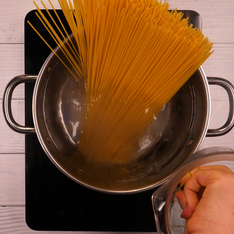

Les spaghetti bolognaise
les Ingredients
- 500 g de spaghetti
- 1 oignon
- 2 gousses d'ail
- 1 carotte
- 1 branche de celeri
- 850 g de tomate fraiches
- 37,5 ml de vin rouge
- 500 g de boeuf hache
- 50 cl de bouillon
- persil
- 1 cuillere a cafe de sucre
- 2 cuillere a soupe d'huile
Preparation
| temps total |
1h20 |
| Preparation |
20 min |
| cuisson |
1 heure |
- Hachez l'ail, l'oignon, puis coupez la carotte et le céleri en petits dés
(enlevez les principales nervures du céleri).
- Faites chauffer l'huile dans une casserole assez grande. Faites revenir l'ail,
l'oignon, la carotte et le céleri à feu doux pendant 5 min en remuant.
- Augmenter la flamme, puis ajoutez le boeuf. Faites brunir et remuez de façon à
ce que la viande ne fasse pas de gros paquets.
- Ajoutez le bouillon, le vin rouge, les tomates préalablement coupées assez grossièrement,
le sucre et le persil haché. Portez à ébullition.
- Baisser ensuite le feu et laissez mijoter à couvert 1h à 1h30, de façon à ce que le vin s'évapore.
- Faites cuire les spaghetti, puis mettez-les dans un plat.

- Ajoutez la sauce bolognaise.
Retour au Menus